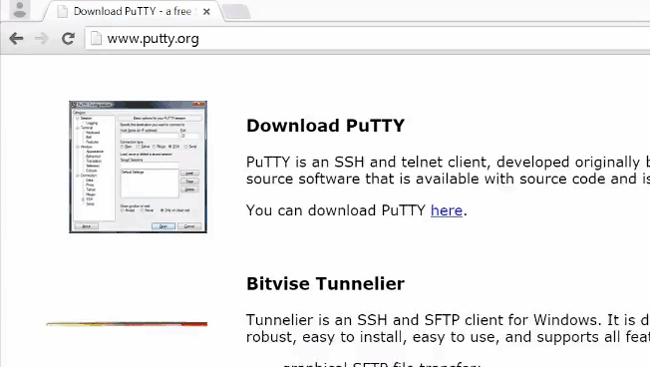
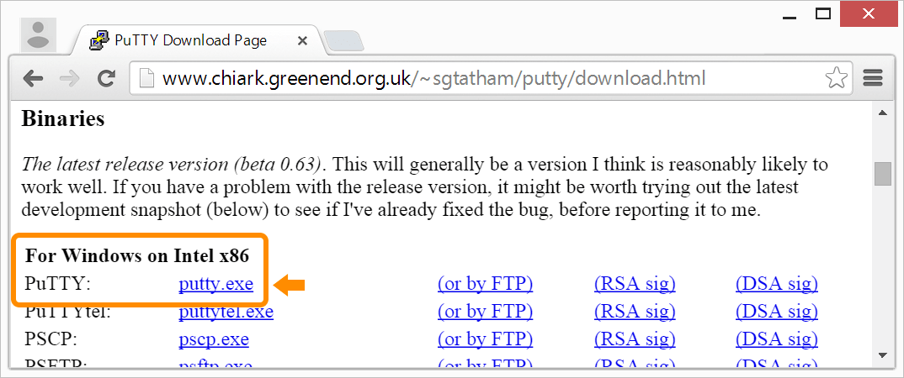

Download a terminal client (PuTTY)
Windows does not come with a built-in terminal emulator so download and use the PuTTY client.

-
Visit the PuTTY download page: http://www.chiark.greenend.org.uk/~sgtatham/putty/download.html.
-
Under the “For Windows on Intel x86” heading, click on the “putty.exe” link to download the latest release version to your computer.

-
Double-click putty.exe on your computer to launch PuTTY.